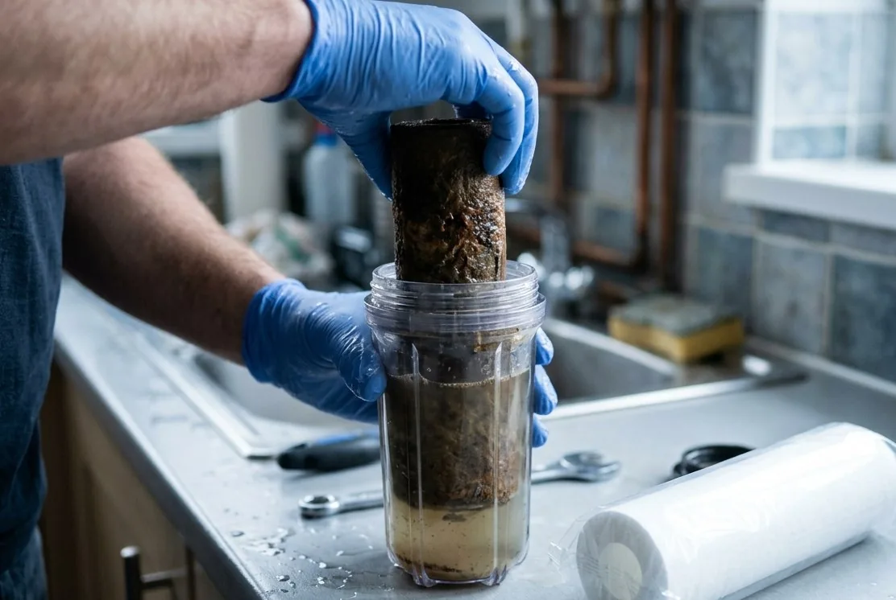

Состав услуги
- визуальная проверка и опрос;
- контроль давления и режимов;
- проверка автоматики и дренажа;
- замена согласованных расходников;
- рекомендации и следующая дата.
Цель сервиса – не просто заменить всё по календарю, а проверить работу, расходники, настройки и признаки изменения воды.

Собираем историю, модель, симптомы и предыдущие настройки.
Называем, что входит в плановый визит, а какие расходники понадобятся по факту осмотра, и ждём вашего решения до покупки.
Проверяем режимы, выполняем согласованные операции и повторно запускаем систему.
Оставляем перечень сделанного, снятые показания и дату следующей проверки, а отдельно – то, что пока работает, но скоро попросит внимания.
Отдельная понятная операция.
Открыть страницу →Только после проверки ресурса.
Открыть страницу →Если причина ухудшения неизвестна.
Открыть страницу →Обслуживание идёт по регламенту: проверяются режимы, расходники, настройки и признаки изменения воды, даже когда ничего не сломалось. Вызов по неисправности – это поиск причины конкретного симптома, который уже появился. Если во время планового визита вскрывается поломка, это отдельное решение и отдельная смета.
Считать нужно соль, картриджи, воду на промывки, электричество для клапана и периодическую замену загрузки. Сумма зависит от жёсткости, железа и того, сколько воды реально расходует дом. Поэтому эксплуатационные расходы мы показываем отдельной строкой ещё на подборе, а не оставляем сюрпризом.
С идентификации: фото системы целиком и крупно шильдиков, чтобы понять модели, объёмы корпусов и доступность расходников. Дальше снимаем текущие настройки и проверяем, соответствуют ли они воде в доме, а не тому, что было настроено когда-то. Только после этого имеет смысл говорить про регламент.
Ориентироваться только на ощущения рискованно: часть изменений видна по давлению и расходу соли раньше, чем человеку. Интервал задают тип оборудования, реальный расход и состав воды, а корректируется он по факту первых визитов. Поведение напора и расход соли обычно меняются раньше, чем сама вода.
Не обязательно: сервис возвращает оборудование в рабочее состояние, но не меняет воду в источнике и не исправляет схему, которая перестала подходить. Сначала проверяем, что было сделано и как отрабатывают режимы, потом смотрим на источник и на соответствие схемы текущему анализу. Если причина в нашей работе, возвращаемся и переделываем.
Пришлите фото системы и опишите, когда её обслуживали. До выезда согласуем базовую цену и возможные расходники.
Сначала зафиксируем источник и симптомы. Для точного решения понадобятся анализ и параметры дома.